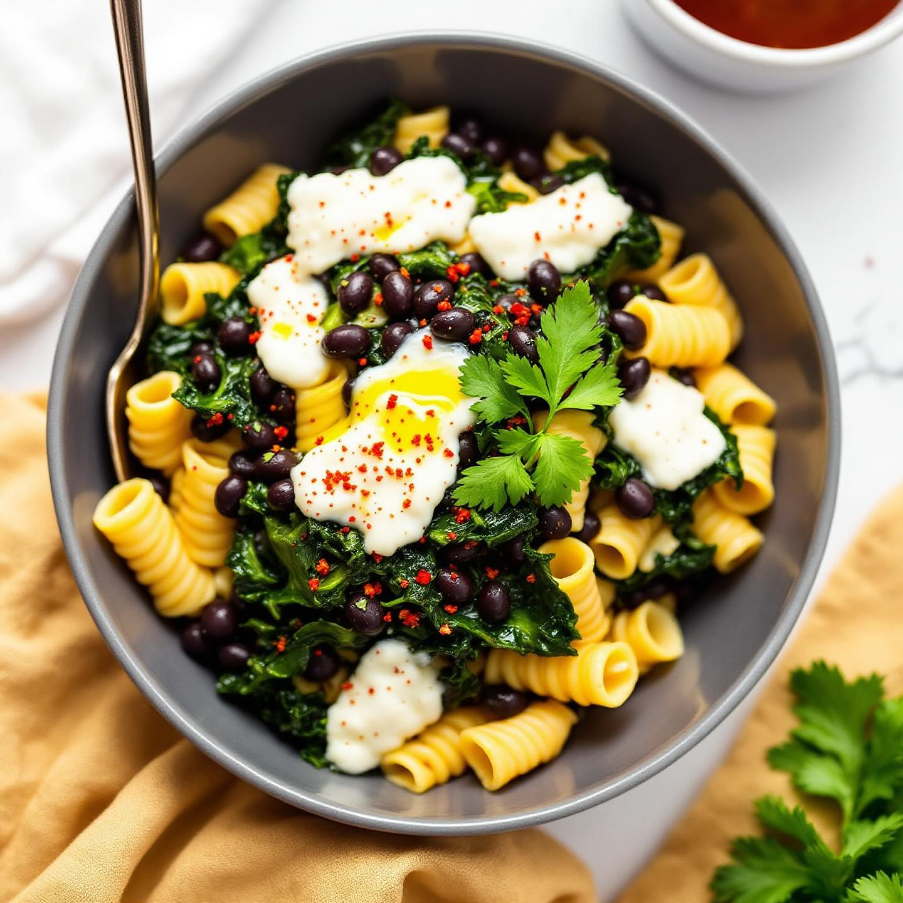

🍝 Pasta Corta con Fagioli Neri
Ingredienti:
- 320g di pasta corta (ditalini, mezze maniche o tubetti)
- 250g di fagioli neri lessati
- 1 cipolla
- 2 spicchi d'aglio
- 300g di pomodori pelati
- Rosmarino fresco
- Olio extravergine d'oliva q.b.
- Sale e pepe q.b.
- Peperoncino (opzionale)
👨🍳 Preparazione
- Soffriggi la cipolla tritata e l'aglio in olio EVO per 3 minuti.
- Aggiungi i pomodori pelati e cuoci a fuoco medio per 15 minuti.
- Unisci i fagioli neri scolati e cuoci per altri 10 minuti.
- Nel frattempo, cuoci la pasta in abbondante acqua salata.
- Scola la pasta al dente e versala nella padella con il sugo.
- Saltala per 2 minuti, aggiungendo un mestolo di acqua di cottura.
- Servi con rosmarino fresco e un filo d'olio a crudo.
💡 Consigli
I fagioli neri sono ricchi di antiossidanti e proteine. Per un sapore più intenso, lascia insaporire il sugo per più tempo. Se preferisci una consistenza più cremosa, frulla metà dei fagioli prima di aggiungere la pasta.
🍝 Short Pasta with Black Beans
Ingredients:
- 320g short pasta (ditalini, half-sleeves or tubetti)
- 250g boiled black beans
- 1 onion
- 2 garlic cloves
- 300g peeled tomatoes
- Fresh rosemary
- Extra virgin olive oil to taste
- Salt and pepper to taste
- Chili (optional)
👨🍳 Preparation
- Sauté the chopped onion and garlic in EVO oil for 3 minutes.
- Add the peeled tomatoes and cook over medium heat for 15 minutes.
- Add the drained black beans and cook for another 10 minutes.
- Meanwhile, cook the pasta in plenty of salted water.
- Drain the pasta al dente and pour it into the pan with the sauce.
- Toss for 2 minutes, adding a ladle of cooking water.
- Serve with fresh rosemary and a drizzle of raw oil.
💡 Tips
Black beans are rich in antioxidants and protein. For a more intense flavor, let the sauce simmer longer. If you prefer a creamier consistency, blend half the beans before adding the pasta.
🍝 Pasta Corta con Frijoles Negros
Ingredientes:
- 320g de pasta corta (ditalini, mezze maniche o tubetti)
- 250g de frijoles negros cocidos
- 1 cebolla
- 2 dientes de ajo
- 300g de tomates pelados
- Romero fresco
- Aceite de oliva virgen extra al gusto
- Sal y pimienta al gusto
- Guindilla (opcional)
👨🍳 Preparacion
- Sofria la cebolla picada y el ajo en aceite EVO durante 3 minutos.
- Anada los tomates pelados y cocine a fuego medio durante 15 minutos.
- Una los frijoles negros escurridos y cocine otros 10 minutos.
- Mientras tanto, cueza la pasta en abundante agua salada.
- Escurra la pasta al dente y viertala en la sarten con la salsa.
- Saluee durante 2 minutos, anadiendo un cucharón de agua de coccion.
- Sirva con romero fresco y un chorrito de aceite crudo.
💡 Consejos
Los frijoles negros son ricos en antioxidantes y proteinas. Para un sabor mas intenso, deje que la salsa hierva a fuego lento durante mas tiempo. Si prefiere una consistencia mas cremosa, triture la mitad de los frijoles antes de anadir la pasta.
🍝 Massa Curta com Feijao Preto
Ingredientes:
- 320g de massa curta (ditalini, mezze maniche ou tubetti)
- 250g de feijao preto cozido
- 1 cebola
- 2 dentes de alho
- 300g de tomates pelados
- Alecrim fresco
- Azeite extra virgem a gosto
- Sal e pimenta a gosto
- Malagueta (opcional)
👨🍳 Preparacao
- Refogue a cebola picada e o alho em azeite EVO durante 3 minutos.
- Junte os tomates pelados e cozinhe em lume medio durante 15 minutos.
- Junte o feijao preto escorrido e cozinhe mais 10 minutos.
- Entretanto, coza a massa em abundante agua salgada.
- Escorra a massa al dente e deite-a na frigideira com o molho.
- Salteie durante 2 minutos, juntando uma concha de agua de cozedura.
- Sirva com alecrim fresco e um fio de azeite cru.
💡 Dicas
O feijao preto é rico em antioxidantes e proteinas. Para um sabor mais intenso, deixe o molho apurar mais tempo. Se preferir uma consistencia mais cremosa, triture metade do feijao antes de juntar a massa.
🍝 Kurze Nudeln mit Schwarzen Bohnen
Zutaten:
- 320g kurze Nudeln (Ditalini, Mezze Maniche oder Tubetti)
- 250g gekochte schwarze Bohnen
- 1 Zwiebel
- 2 Knoblauchzehen
- 300g geschaelte Tomaten
- Frischer Rosmarin
- Natives Olivenoel extra nach Geschmack
- Salz und Pfeffer nach Geschmack
- Chili (optional)
👨🍳 Zubereitung
- Die gehackte Zwiebel und den Knoblauch in Olivenoel 3 Minuten anschwitzen.
- Die geschaelten Tomaten hinzufuegen und bei mittlerer Hitze 15 Minuten kochen.
- Die abgetropften schwarzen Bohnen hinzufuegen und weitere 10 Minuten kochen.
- Waehrenddessen die Nudeln in reichlich Salzwasser kochen.
- Die Nudeln al dente abgiessen und in die Pfanne mit der Sauce geben.
- 2 Minuten durchschwenken, dabei einen Schoepfloeffel Kochwasser hinzufuegen.
- Mit frischem Rosmarin und einem Schuss rohem Oel servieren.
💡 Tipps
Schwarze Bohnen sind reich an Antioxidantien und Protein. Fuer einen intensiveren Geschmack die Sauce laenger koecheln lassen. Bei einer cremigeren Konsistenz die Haelfte der Bohnen vor dem Hinzufuegen der Nudeln puereeieren.
🍝 Κοντό Ζυμαρικό με Μαύρα Φασόλια
Συστατικά:
- 320g κοντό ζυμαρικό (ditalini, mezze maniche ή tubetti)
- 250g βρασμένα μαύρα φασόλια
- 1 κρεμμύδι
- 2 σκελίδες σκόρδου
- 300g ξεφλουδισμένες ντομάτες
- Φρέσκο δενδρολίβανο
- Έξτρα παρθένο ελαιόλαδο κατά βούληση
- Αλάτι και πιπέρι κατά βούληση
- Τσίλι (προαιρετικά)
👨🍳 Εκτέλεση
- Σοτάρετε το ψιλοκομμένο κρεμμύδι και το σκόρδο σε ελαιόλαδο για 3 λεπτά.
- Προσθέστε τις ξεφλουδισμένες ντομάτες και μαγειρέψτε σε μέτρια φωτιά για 15 λεπτά.
- Προσθέστε τα στραγγισμένα μαύρα φασόλια και μαγειρέψτε για άλλα 10 λεπτά.
- Στο μεταξύ, βράστε το ζυμαρικό σε άφθονο αλατισμένο νερό.
- Στραγγίστε το ζυμαρικό al dente και ρίξτε το στο τηγάνι με τη σάλτσα.
- Σοτάρετε για 2 λεπτά, προσθέτοντας μια κουτάλα νερό μαγειρέματος.
- Σερβίρετε με φρέσκο δενδρολίβανο και μια σταλιά ωμού λαδιού.
💡 Συμβουλές
Τα μαύρα φασόλια είναι πλούσια σε αντιοξειδωτικά και πρωτεΐνες. Για πιο έντονη γεύση, αφήστε τη σάλτσα να σιγοβράσει περισσότερο. Αν προτιμάτε πιο κρεμώδη υφή, πολτοποιήστε τα μισά φασόλια πριν προσθέσετε το ζυμαρικό.